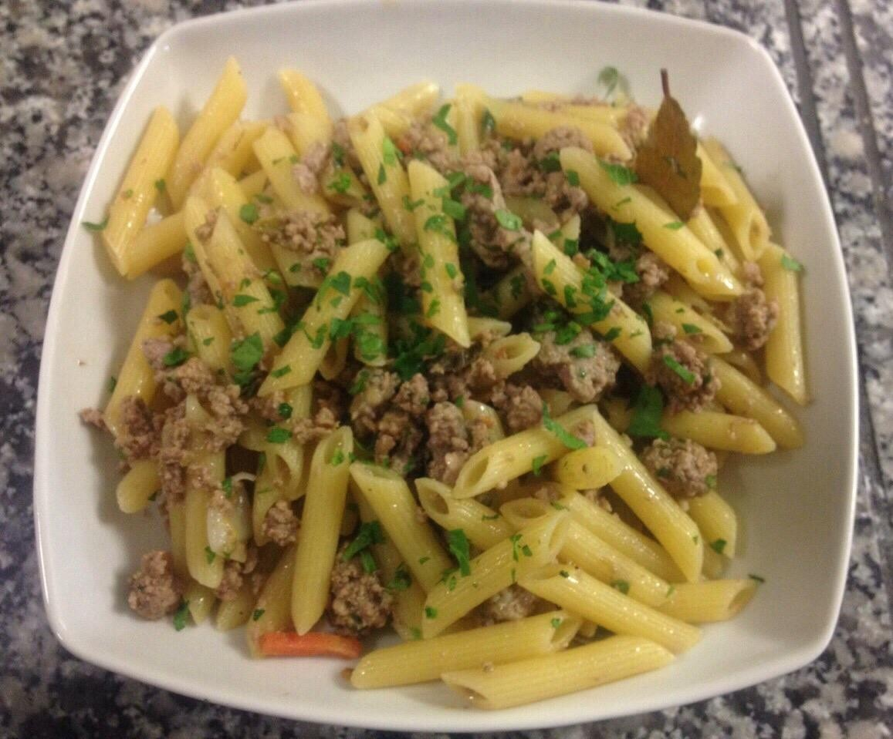
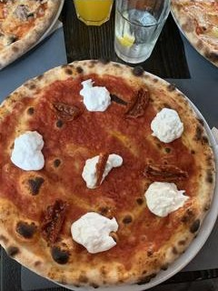
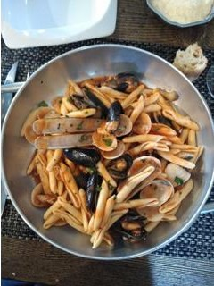
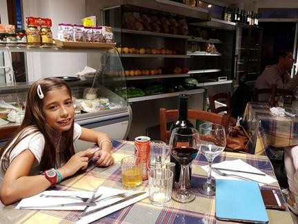
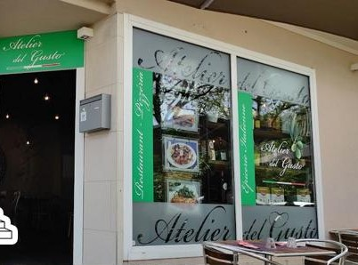

Une vraie trattoria de quartier : pâtes fraîches du jour, pizzas napolitaines le soir, un comptoir d'épicerie italienne — et l'esprit d'un atelier où tout se prépare à la main.



À Bonnevoie, « Atelier del Gusto » porte bien son nom : c'est une maison où l'on travaille le produit chaque matin. Les pâtes se déclinent au fil des arrivages, la focaccia sort tiède, et la pizza napolitaine s'allume le soir.
Au fond, un vrai comptoir d'épicerie — fromages, charcuterie, produits d'Italie — prolonge l'assiette. On y vient en famille, entre voisins, ou l'on croise la camionnette « del Gusto » qui promène le goût de la maison dans la ville.


Deux sources divergent légèrement — merci de confirmer les horaires exacts.